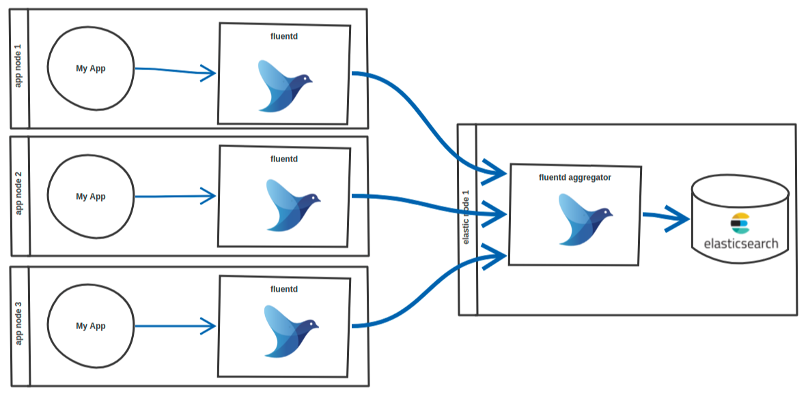

release time :2021-11-30 16:36
Read https://kubernetes.io/zh/docs/concepts/cluster-administration/logging/ before reading this article
Fluentd logging architecture

A typical deployment architecture of Fluentd needs to include two different roles: forwarder and aggregator.
Each Kubernetes working node deploys a Fluentd to forward the node's container logs to the edge cloud configuration public network working node, configure the public network working node and then forward the log to the software deployment node.
Fluent configuration file
The configuration of Fluentd for each Kubernetes worker node is as follows:
<source>
@type tail
path /var/log/containers/*.log
pos_file /var/log/fluentd-containers.log.pos
format json
tag kubernetes.*
time_format %Y-%m-%dT%H:%M:%S.%NZ
</source>
<match kubernetes.**>
@type forward
send_timeout 60s
recover_wait 10s
hard_timeout 60s
<server>
name myserver1
host 192.168.200.100
port 24224
weight 60
</server>
</match>
The aggregation log node, that is, the working node Fluentd configured with the public network in the above figure, is configured as follows:
<source>
@type forward
port 24224
bind 0.0.0.0
</source>
<match **>
@type forward
send_timeout 60s
recover_wait 10s
hard_timeout 60s
<server>
name myserver2
host 36.134.56.149
port 24224
weight 60
</server>
</match>
The configuration of the software deployment node Fluentd is as follows:
<source>
@type forward
port 24224
bind 0.0.0.0
</source>
<match **>
@type stdout
</match>
The log rollback configuration is as follows:
# cat /etc/logrotate.d/cmp-pod
/tmp/ftp_path/log_pod/*.log {
missingok
copytruncate
rotate 30
compress
dateext
dateformat -%Y%m%d-%H-%s
sharedscripts
}
# cat /etc/cron.d/cmp-pod
# Run system activity accounting tool every 10 minutes
SHELL=/bin/bash
PATH=/sbin:/bin:/usr/sbin:/usr/bin
MAILTO=root
*/5 * * * * root logrotate -f /etc/logrotate.d/cmp-pod
Record several problems encountered in the process of collecting Pod logs with Fluentd
Compared with bare metal and container deployment, adopt container deployment solution
Bare metal can also be deployed, but requires a ruby environment, as well as Fluent dependencies, including version dependencies, deployment is a bit cumbersome, and it is not conducive to automation. If container deployment is adopted, the above disadvantages do not exist, and the kind: DaemonSet of Kubernetes can be used to conveniently start the Fluentd service on each Kubernetes node.
The container image uses docker pull fluent/fluentd:latest. You can also use fluent/fluentd-kubernetes-daemonset, which should be better. Some configurations should be configured. I did my own research and used the original image. You can also directly use the resource list of the addon plug-in officially provided by Kubernetes at the address: https://github.com/kubernetes/kubernetes/blob/master/cluster/addons/fluentd-elasticsearch/ and install it directly.
The following command starts the container
docker run -it -d -p 24224:24224 -v /path/to/conf:/fluentd/etc -v /var:/var fluent/fluentd:latest
The initial startup failed because there is no configuration file (the host's /path/to/conf directory overwrites the fluentd configuration file directory in the container), plus the Fluentd configuration file, the container restarted successfully.
In order to test the Fluent log service, two small experiments were done.
input: tail
After the Fluent configuration file is written as follows, restart the Fluentd container.
# Directive determines the input sources
# Watches source and triggers an event with a tag attached to it
<source>
@type tail # Uses tail plugin to read logs from
format json # Assumes that the log file is in "json" format
read_from_head true # Start to read the logs from the head of file, not bottom
tag api.user.registration # Tag triggered event with "api.user.registration"
path /home/ubuntu/logs/application/registration.log* # Paths to the files which will be tailed
pos_file /home/ubuntu/logs/fluentd/registration.log.pos # Path to the "position" database file
</source>
# Directive determines the output destinations
# Catches an event with a specific tag attached to it
<match api.user.registration>
@type file # Uses file plugin to write logs to
path /home/ubuntu/logs/fluentd/registration.log # Path to the log file which logs will be written to
</match>
test was successful.
ubuntu@linux:~$ echo '{"user":"1"}' >> logs/application/registration.log.1
ubuntu@linux:~$ echo '{"user":"2"}' >> logs/application/registration.log.1
ubuntu@linux:~$ echo '{"user":"3"}' >> logs/application/registration.log.1
ubuntu@linux:~$ ls -l logs/fluentd/
-rw-r--r-- 1 td-agent td-agent 61 Apr 6 21:02 registration.log.20180406.b56933893cd87b6b8
-rw-r--r-- 1 td-agent td-agent 83 Apr 6 21:02 registration.log.pos
ubuntu@linux:~$ cat logs/fluentd/registration.log.20180406.b56933893cd87b6b8
2018-04-06T21:02:30+01:00 api.user.registration {"user":"1"}
2018-04-06T21:02:49+01:00 api.user.registration {"user":"2"}
2018-04-06T21:02:55+01:00 api.user.registration {"user":"3"}
ubuntu@linux:~$ touch logs/application/registration.log.2
ubuntu@linux:~$ echo '{"admin":"1"}' >> logs/application/registration.log.2
ubuntu@linux:~$ echo '{"admin":"2"}' >> logs/application/registration.log.2
ubuntu@linux:~$ echo '{"admin":"3"}' >> logs/application/registration.log.2
ubuntu@linux:~$ cat logs/fluentd/registration.log.20180406.b56933893cd87b6b8
2018-04-06T21:02:30+01:00 api.user.registration {"user":"1"}
2018-04-06T21:02:49+01:00 api.user.registration {"user":"2"}
2018-04-06T21:02:55+01:00 api.user.registration {"user":"3"}
2018-04-06T21:07:37+01:00 api.user.registration {"admin":"1"}
2018-04-06T21:07:37+01:00 api.user.registration {"admin":"2"}
2018-04-06T21:07:38+01:00 api.user.registration {"admin":"3"}
input: forward
After the Fluent configuration file is written as follows, restart the Fluentd container.
<source>
@type forward
</source>
<match *>
@type file
path /fluentd/log/${tag}/${tag}
append true
<format>
@type single_value
message_key log
</format>
<buffer tag,time>
@type file
timekey 1d
timekey_wait 10m
flush_mode interval
flush_interval 30s
</buffer>
</match>
Start a new container, specify the logging driver of the container
docker run -d \
...
--log-driver=fluentd \
--log-opt fluentd-address=<fluentdhost>:24224 \
--log-opt mode=non-blocking \
--log-opt tag={{.Name}} \
<image>
Observe the log, and you can see a directory structure similar to this in the /home/ubuntu/container-logs directory:
.
└── <container-name>
└── <container-name>.20190123.log
The log file of the pod can be cated in the Fluentd container, but the log report of the Fluentd service cannot read the log file of the pod
/var/log/containers/samplelog-79bd66868b-t7xn9_logging1_fluentd-70e85c5d6328e7d.log unreadable. It is excluded and would be examined next time.
Log in to the Fluentd container to cat log files. After reading the read and write attributes of the log files, the root user can read them, but other users cannot read them. ps the Fluentd process and found that they are all running as the fluent user.
/ # ps -ef
PID USER TIME COMMAND
1 root 0:00 {entrypoint.sh} /usr/bin/dumb-init /bin/sh /bin/entrypoint.sh /bin/sh -c exec fluentd -c /fluentd/etc/${FLUENTD_CONF} -p /fluentd/plugins $FLUENTD_
6 fluent 0:02 {fluentd} /usr/bin/ruby /usr/bin/fluentd -c /fluentd/etc/fluent.conf -p /fluentd/plugins
17 fluent 0:28 /usr/bin/ruby -Eascii-8bit:ascii-8bit /usr/bin/fluentd -c /fluentd/etc/fluent.conf -p /fluentd/plugins --under-supervisor
21 root 0:00 sh
26 root 0:00 ps -ef
/ #
Because the fluentd image is built with fluent user privileges, insufficient privileges may occur.
The solution is to pull the fluent code to build it yourself and specify the user in the Dockfile; or use the simplest method to specify the UID of the fluent user as 0 in the env. I have an answer to this question on stackoverflow for the specific operation method.
https://stackoverflow.com/questions/51671212/fluentd-log-unreadable-it-is-excluded-and-would-be-examined-next-time/70165516#70165516
The most direct way is to change mode:
chmod 777 /var/log/containers/*.log
but the best way is: change fluent user to root (set FLUENT_UID environment variable to 0 in your docker/kubernetes configuration);
add –env FLUENT_UID=0 to docker command, for example:
docker run -it -d -p 24224:24224 -v /path/to/conf:/fluentd/etc -v /var:/var --env FLUENT_UID=0 fluent/fluentd:latest
or add to Kubernetes yaml file:
apiVersion: extensions/v1beta1
kind: DaemonSet
metadata:
name: fluentd
namespace: kube-system
# namespace: default
labels:
k8s-app: fluentd-logging
version: v1
kubernetes.io/cluster-service: "true"
spec:
template:
metadata:
labels:
k8s-app: fluentd-logging
version: v1
kubernetes.io/cluster-service: "true"
spec:
serviceAccount: fluentd
serviceAccountName: fluentd
tolerations:
- key: node-role.kubernetes.io/master
effect: NoSchedule
containers:
- name: fluentd
image: fluent/fluentd-kubernetes-daemonset:v1.4-debian-elasticsearch
env:
- name: FLUENT_UID # change this place
value: "0"
After modifying as per my answer on stackoverflow, everything works fine.
/ # ps -ef
PID USER TIME COMMAND
1 root 0:00 {entrypoint.sh} /usr/bin/dumb-init /bin/sh /bin/entrypoint.sh /bin/sh -c exec fluentd -c /fluentd/etc/${FLUENTD_CONF} -p /fluentd/plugins $FLUENTD_
7 root 0:05 {fluentd} /usr/bin/ruby /usr/bin/fluentd -c /fluentd/etc/fluent.conf -p /fluentd/plugins
16 root 1:58 /usr/bin/ruby -Eascii-8bit:ascii-8bit /usr/bin/fluentd -c /fluentd/etc/fluent.conf -p /fluentd/plugins --under-supervisor
22 root 0:00 sh
28 root 0:00 ps -ef
/ #